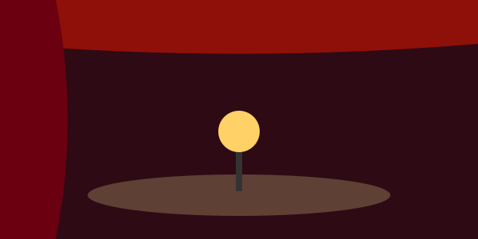

Teatro Vasconcelos
Espetáculos de teatro, música e dança.
Sobre
Palco da programação cultural da cidade, com peças, concertos e apresentações de dança durante todo o mês.
Visita
- Endereço
- Endereço a preencher, Mogi das Cruzes
- Horário
- Bilheteria: quarta a domingo, 14h às 20h
- Entrada
- Varia conforme o espetáculo
Agenda
Concerto da Orquestra Jovem em 24 de outubro.
Voltar ao início